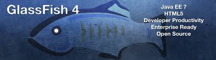

Welcome!
We're web and software developer instructors at Waukesha County Technical College and
we're psyched to bring you Java Enterprise Edition (java web development) training
using the latest technology of the web. In other words, we eat our own dog food. Building
a site like this takes time, so please excuse our mess during construction. This could
take a while :-)
Click Learning Trails to get started.
Technology Highlighted


- 

Get in Touch
We'd love to hear from you. Do you like this site ... or hate it? We won't take offense. Let us know how we can improve it; let us know what you'd like to see. And if we're doing something particiularly well, well it would be nice to hear about that too. Thanks for visiting!